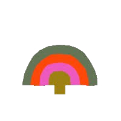
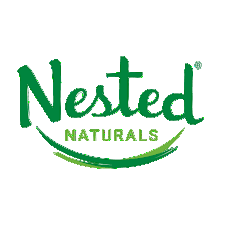
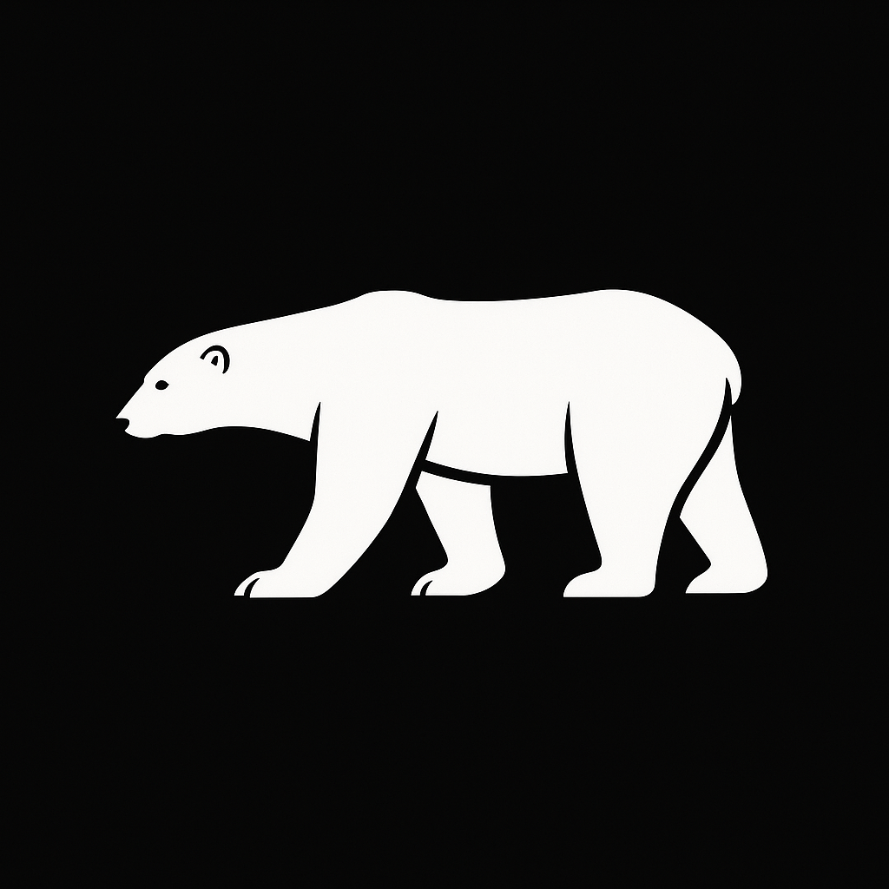
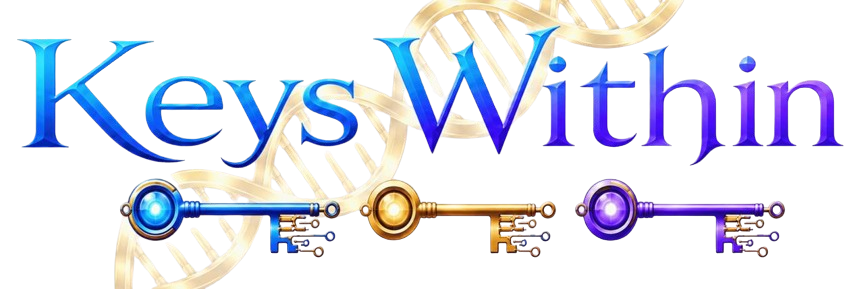

Digital Growth + AI Discoverability
Make your brand easier to find.
By humans & robots.
I help established businesses make sure their websites, products, expertise and content actually make sense to people, search engines and the increasingly large collection of robots deciding what gets recommended.
Some businesses I've been lucky enough to work with




Here's the weird part
Your website can look great and still be invisible.
People aren't only searching Google anymore. They're asking ChatGPT, comparing products through AI and getting answers before they ever land on a homepage.
So your business doesn't just need to be visible. It needs to be understandable. Who are you? What are you known for? What do you sell? Why should anyone | human or machine | trust you?
That's the problem I help untangle.
The main thing
Digital Growth &
AI Discoverability.
Not SEO with an AI sticker slapped on it. This is the work of making your brand crawlable, connected, credible and genuinely understandable to the AI systems people increasingly use to discover what to buy.
I help AI understand what you actually sell.
I audit what AI can actually learn about your business, then fix the gaps. That can mean crawlability, structured product data, entity relationships, site architecture, content and third-party authority signals. The goal is simple: when somebody asks an AI for a product or expert like you, your brand has a real chance to naturally show up.
“we do a lot of good stuff”
“ohhh. got it.”
That's AI discoverability. More or less.
Why this matters now
Your next customer might not Google you.
AI-assisted discovery is moving fast. This is still early, which is exactly why there is an opportunity to build the right signals before every brand is trying to do the same thing.
of shoppers use AI for some form of product discovery.
NIQ, 2026of consumers already use AI-powered search.
McKinsey AI Discovery Survey, 2025year-over-year growth in AI-driven traffic to U.S. retail sites during the 2025 holiday season.
Adobe Analytics, 2026Important distinction
This isn't SEO with AI sprinkled on top.
Traditional SEO asks whether a search engine can find and rank a page. AI discoverability goes further. It asks whether AI can understand the business behind the page, connect the right facts and confidently surface it in a conversation.
How I make it happen
One outcome.
Several useful skills.
These used to be four separate service boxes. Turns out they work much better when they talk to each other.
Web & Ecommerce
Shopify, landing pages, site architecture and conversion. Because eventually somebody still has to click something.
Strategy & Positioning
Clarify what your brand should be known for, who it serves and how your expertise, products and ideas connect.
Content & Email
Educational content, email journeys and retention systems that build authority and keep you interesting after people find you.
Advertising & Analytics
Paid acquisition, measurement, dashboards and optimization. Once the foundation works, we can pour a little gasoline on it.
Plot twist
They're not really separate services.
Your website affects discoverability. Content builds authority. Authority helps AI understand you. Email turns attention into customers. Analytics tells us whether any of this is actually working.
I work across the whole thing.
A good place to start
The Discoverability Audit
Before rebuilding anything, I look at how your business currently appears to search engines, AI systems and customers. We map what's clear, what's missing, what isn't connected and what deserves attention first.
No 70-page PDF designed to make the problem look expensive. Just a useful roadmap.
Try this tonight
Go ahead. Ask an AI about your business.
You can learn a lot in about 60 seconds. If the answers are vague, wrong or missing, that is the gap we're talking about.
Ask your favourite AI
What this looks like
Same business.
Much clearer signal.
One established brand I audited had years of products, proprietary ideas and founder expertise online. To a human, the business made perfect sense.
To AI, those pieces barely knew each other existed.
We mapped the brand, founder, concepts, products and content into one connected digital ecosystem so machines could understand the relationships a human already could.
That's the work. Not gaming an algorithm. Making the truth easier for machines to understand.
Hi, I'm Patrick.
The creative side and the technical side.
I've spent years working across ecommerce, marketing, websites, analytics and growth. Which turns out to be pretty useful now that all of those things are colliding with AI.
I like strategy, but I also like actually building things. So when an audit uncovers a problem, I'm usually not handing you a deck and disappearing into the mist. I can help fix it.
I work best with people who care about what they're building and would rather have a smart conversation than sit through an agency pitch.
No mysterious 11-step framework
A pretty simple process.
We figure out what's actually wrong.
A real conversation. No elaborate discovery theatre.
I map the gaps.
Brand, site, content, technical structure, authority and growth.
We fix the important stuff.
In the order that makes sense, not the order that sounds fanciest.
Then we turn it up.
More visibility, stronger conversion and smarter growth.
Want to know what AI thinks your business is?
Could be interesting. Could be mildly horrifying. Either way, we'll know what to fix.
Start a conversation ↗